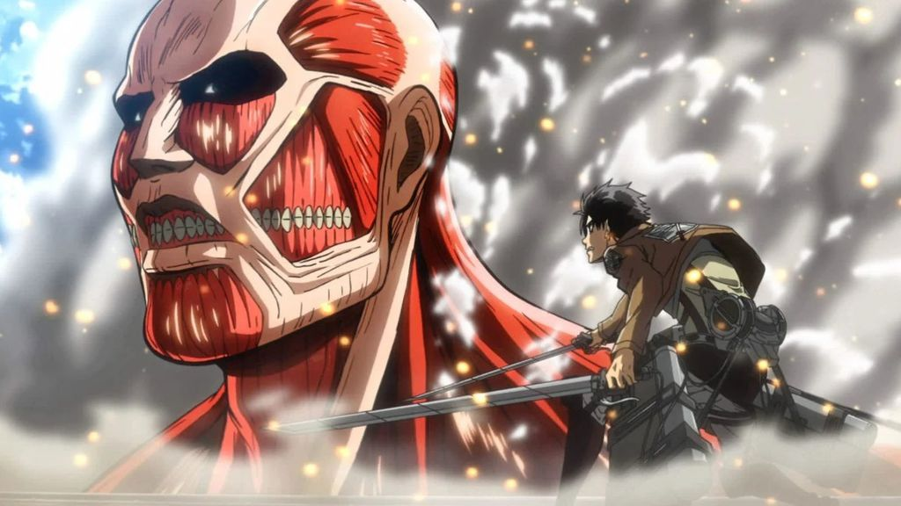
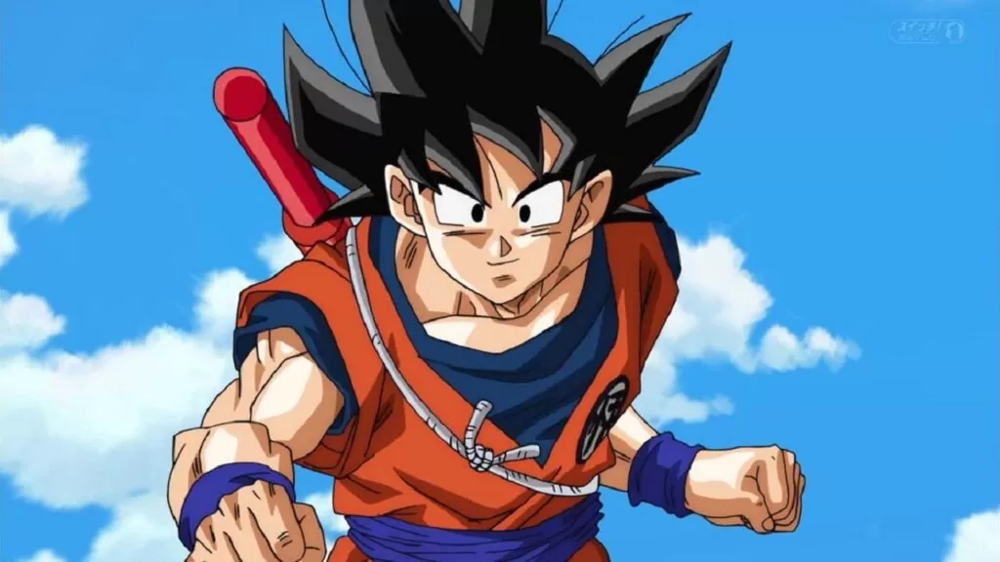
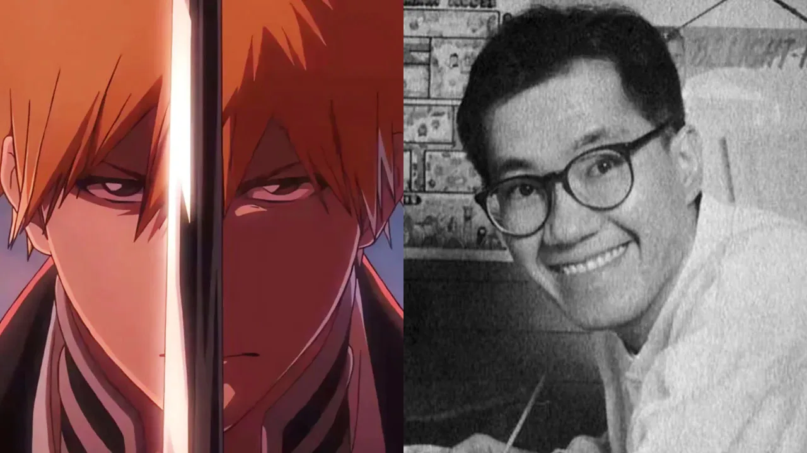
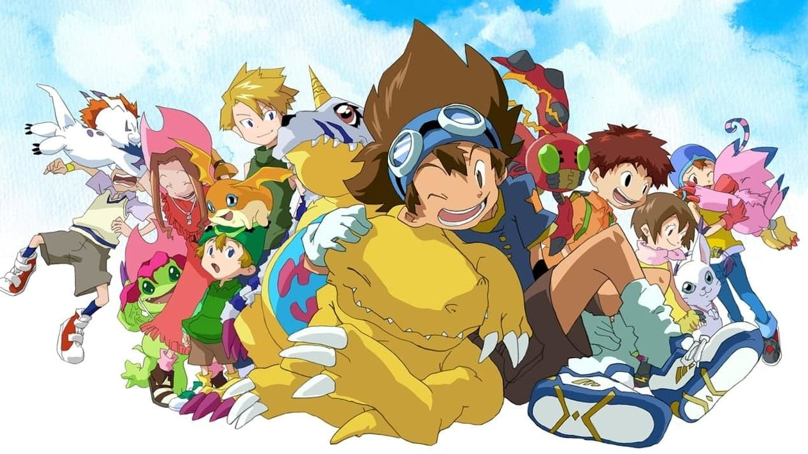
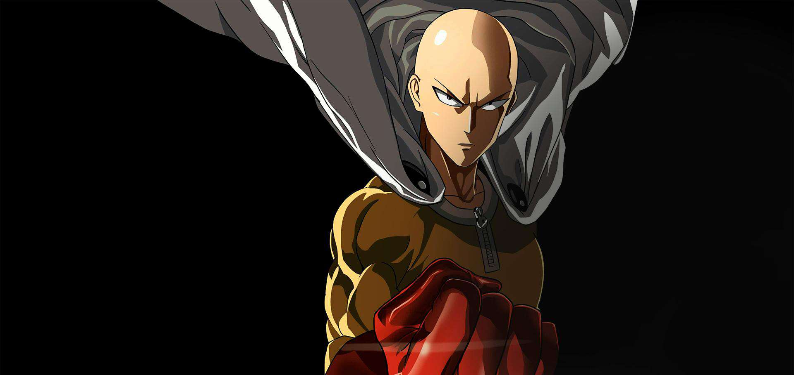
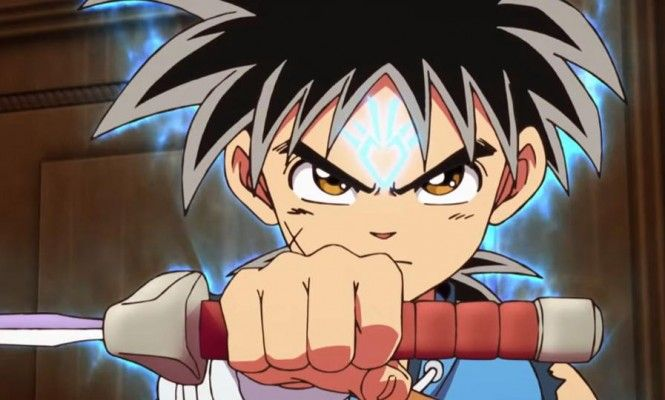

Anunciada 2ª temporada de ‘Mokushiroku no Yonkishi’
Com o sucesso de sua estreia, o anime ‘Mokushiroku no Yonkishi‘ (The Seven Deadly Sins: Four Knights of
the
Apocalypse) teve sua renovação para 2ª temporada.

Presidente do estúdio de Shingeki no Kyojin comenta sobre crise na indústria de anime
O presidente da Wit Studio, conhecido pelas três primeiras temporadas de “Shingeki no Kyojin” (Attack on
Titan) comentou sobre crise e futuro da indústria de anime, reforçando a crescente disparidade entre a
qualidade das animações e o ritmo atual de produção.

Dragon Ball Day: Fãs criam petição para a data 8 de março
Após o triste falecimento de Akira Toriyama (criador de Dragon Ball) em 8 de março, fãs do mundo inteiro
iniciaram algumas petições pedindo que a data seja oficialmente reconhecida como o “Dragon Ball Day”
(Dia de
Dragon Ball), em memória do autor falecido.

“O Menino e a Garça” ganha Oscar de Melhor Animação
Oscar 2024, a academia de artes e ciências cinematográficas premiou o filme O Menino e a Garça (The Boy
and
the Heron), de Hayao Miyazaki e do Studio Ghibli, como Melhor Filme de Animação na 96ª cerimônia do
Oscar. O
filme estava competindo com Elementos, Nimona, Robot Dreams e Homem-Aranha: Através do Universo-Aranha
na
categoria. Infelizmente, Miyazaki e o produtor Toshio Suzuki não puderam estar presentes para receber o
prêmio pessoalmente. Este é o segundo filme de Miyazaki a vencer, após A Viagem de Chihiro em 2003.

Tite Kubo: Criador de BLEACH escreve despedida emocionante para Toriyama
O criador da saga Bleach, Tite Kubo usou as redes sociais para falar sobre o falecimento do mestre Akira
Toriyama aos fãs. O anúncio do falecimento de Toriyama aconteceu da madrugada do dia 8 de Março.

Animação de “Digimon completa 25 anos”com vídeo especial
Para comemorar os 25 anos do anime Digimon, o canal oficial da Toei Animation Youtube lançou um vídeo em
comemoração aos 25 anos da série. O vídeo ganhou destaque no evento Digimoncon.

One Punch-Man: Fãs estão preocupados com o futuro do anime
Aconteceu algumas discursões entre fãs sobre a terceira temporada de “One Punch-Man”, principalmente
porque
ficaram sabendo que o projeto continua com o estúdio anterior. O J.C.Staff (Shokugeki no Souma,
Toradora!)
vão continuar liderando o projeto. Alguns de vocês podem estar se sentindo um pouco desanimados com essa
notícia, e não é para menos.

‘Dragon Quest: The Adventure of Dai’: Disponível para assistir na Netflix
O recente remake adaptado de ‘Dragon Quest: The Adventure of Dai’ (A Aventura de Dai) de Riku Sanjō e
Kōji
Inada, está disponível para assistir na plataforma de streaming da Netflix. Sendo assim a animação é do
estúdio Toei Animation (One Piece).

Jujutsu Kaisen: Programa liderou como o mais assistido de 2023
A versão de anime do popular mangá Jujutsu Kaisen, criado por Gege Akutami, venceu na 6ª edição dos
Global
Demand Awards como o programa mais assistido de 2023. De acordo com o Parrot Analytics, o anime de
Jujutsu
Kaisen superou concorrentes de peso como The Last of Us, The Mandalorian, One Piece e Attack on Titan,
consolidando-se como a grande vencedor do evento.

Direitos Autorais no Japão: Estrangeiros são presos por vazamento da Shonen Jump
Recentemente, no Japão, duas pessoas estrangeiras foram detidas sob a acusação de violação da Lei dos
Direitos Autorais da Shonen Jump. O motivo? O compartilhamento prematuro de fotos da popular revista
Weekly Shonen Jump, centrada em animes, antes de seu lançamento oficial. Essa ação ilegal gerou uma
investigação em andamento por parte da polícia local, conforme relatado pelo portal de notícias NHK.